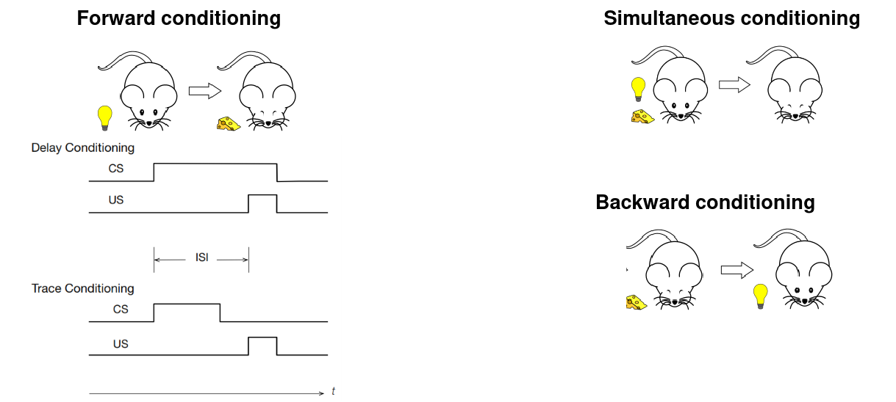
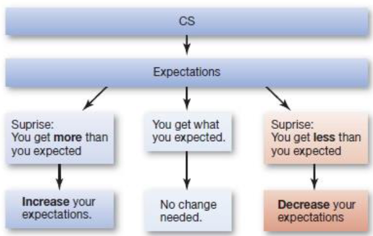
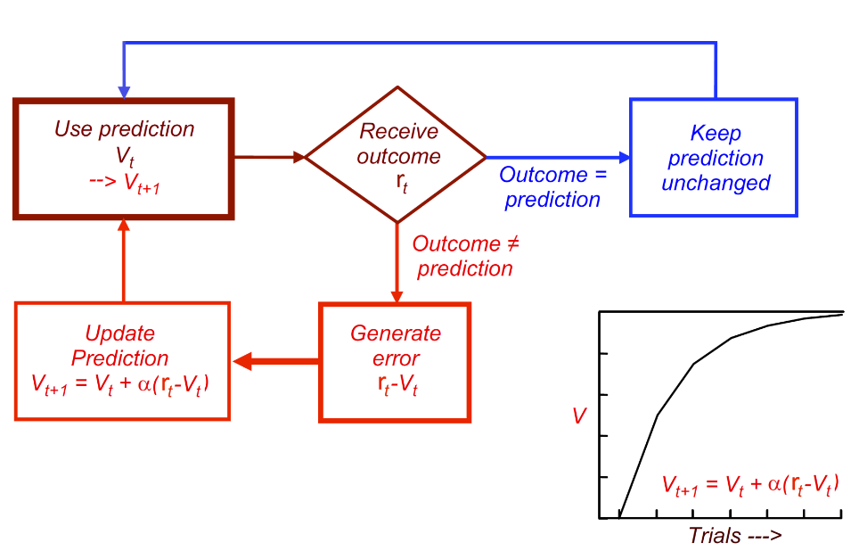
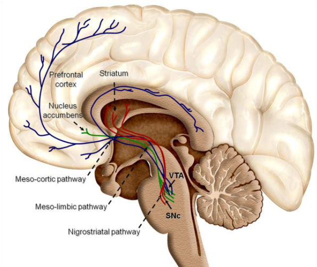

Associative learning
Change in response is caused by learning about the association of at least two stimuli or events. Change in response is caused by learning about the association of at least two stimuli or events:
- A neutral stimulus/event
- A stimulus/event that is a reinforcer
Associative learning is the way in which an animal learns to predict events and control them, in order to maximize rewarding outcomes and minimize averse outcomes to increase chances of survival.
Primary reinforcer/unconditioned stimulus
• A stimulus that is biologically relevant and prepared to elicit a response. Can be positive or negative.
Secondary reinforcer
A stimulus that comes to elicit a response following associative learning. It has become relevant after an associative learning experience. Can be positive or negative.
Pavlovian or classical conditioning
When a stimulus is presented that has no meaning to an animal, such as the sound of a bell, there is no response. However, presentation of a meaningful stimulus (like food) generates an unconditioned response. When the sound is paired with the food, the animal learns the association; and later the newly conditioned stimulus alone can elicit the response, which is now called a conditioned response
Different types of conditional responses
Responses can be:
- Behavioral
- Physiological
- Change in subjective experience
Behavioral
The animal responds to the conditioned stimulus with a conditioned response that prepares the animal for, or protects it from, the predicted unconditioned stimulus.
The timing of the conditioned stimulus before the unconditioned one is crucial.
Physiological

Frequency also matters
Continuous Reinforcement
The CS is reinforced with the US every single time it occurs. It most effective when trying to teach a new association.
Partial reinforcement
The CS is reinforced only part of the time. Associations are acquired more slowly with partial reinforcement, but the response is more resistant to extinction.
Fear/threat/averse conditioning
Is a particular kind of classical conditioning that involves the use of fear to stimulate a response.
Contiguity
Associative learning is learning about contiguity.
Contiguity
closeness in time between stimulus/behavior and outcome. Stimuli that are close between one and another in time become associated (not sufficient for learning).
Two types of conditioning:
- Delay conditioning: he CS extends throughout the inter-stimulus interval (ISI), which is the time interval between the CS onset and the US onset
- Trace conditioning: there is a time interval between the cs and the us. The interval must be short
Plasticity
Neural connections can be modified by experience and learning. Hebb’s Law: Neurons that fire together, wire together.
Contingency
Contingency is the causal relationship between stimulus/behavior and outcome. When one stimulus depends on the other, they will become associated --> Predictive value critical. It is foundamental, with contiguity, to create an association.
Surpise
With Contiguity and Contingency also surpise is foundamental to the learning process.  Learning theories have posited that conditioning is not instructed by a simple sensory representation of the outcome, but instead by an error signal measuring the difference between the outcome actually present and that expected.
Prediction error
It dicates the variations in the effectivness of the US in supporting the learning: if the difference is large, then the learning update the prediction.
Rescola-Wagner model for prediction error
, where:
- R is the vaule of US, 1 if delivered and 0 if omitted
- V is the expectancy of the use of the expected value of a given CS
- T is the trial
- is the learning rate parameter, between 0 and 1. 
Temporal-difference model for prediction error
, . It is a real-time model and t is the time steps within a trial instad of a complete one.
Dopamine
To update the response of the neurons after the prediction error has been computed, the brain uses dopamine: a neurotransmitter having effects other than, or in addition to, direct neural excitation or inhibition. There are 3 pathways the brain che follow to fix the neurons' firing rate:
- Nigrostriatal pathway: it is critical in the production of movement as part of the basal ganglia motor loop
- Mesolimbic pathway: projects to the nucleus accumbens, septum, amygdala and hippocampus (important for motivational function)
- Mesocortical pathway: projects to the medial prefrontal, cingulate, orbitofrontal and perirhinal cortex (important for motivational function)
